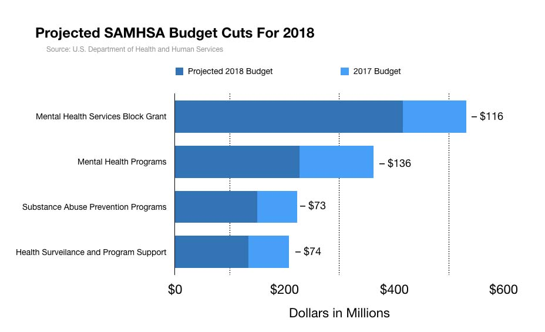
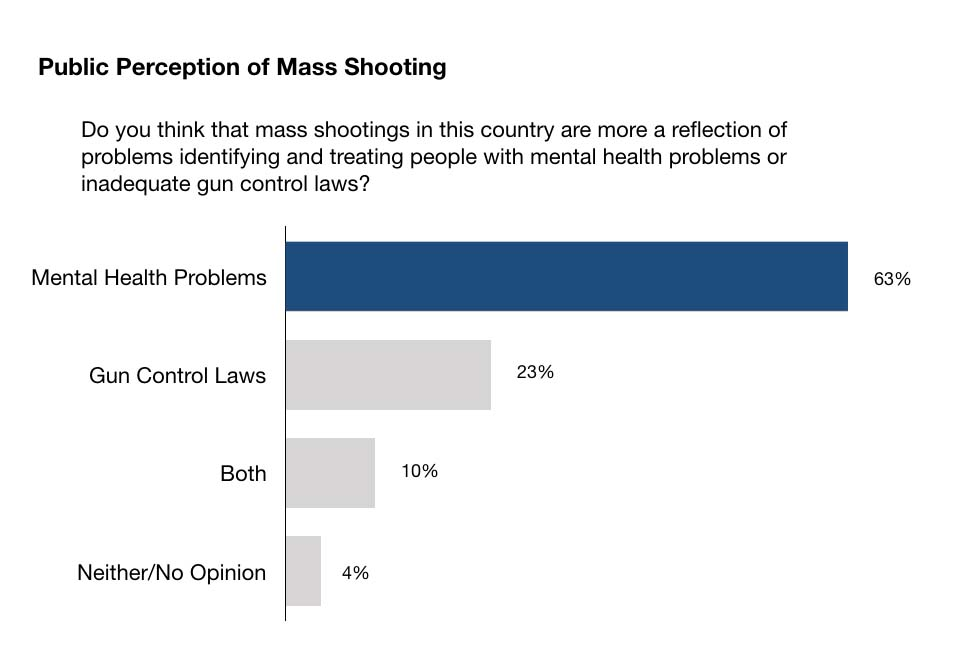

“I think that mental health is your problem here,” said Donald Trump on the Sutherland Springs, Texas shooting last November.
“...But this isn’t a guns situation.”
With this statement, Trump followed the oft-used narrative of mental illness as a cause of violence. It pointed out a glaring roadblock to mental health improvements: mental illness issues are only willingly brought to mainstream attention in the aftermath of some horrific, violent event. This is more often the case for mass shootings, as mental health is a scapegoat for gun control.
This was the case following Sutherland, Texas mass shooting, as the media discourse that followed had more to do with proving or disproving Trump’s statements and less to do with either firearm access or improving mental health, which is not so hard to do.
The connection between mental health and mass shootings is largely disputable. It is often overlooked that mass shootings are rare and particular instances in the big picture of gun violence. They are aberrations as opposed to commonplace, yet the media and government officials (including Trump) are quick to view them as normal grounds for gun violence representation.
Mental health instability is not a good predictor of mass shootings. What is often referred to as “mental health” or “mental illness” in these cases is actually a subgroup of a larger population (that subgroup is usually those with severe and untreated cases of mental illness). Again, similar to the ignorance towards the big picture of gun-violence, this distinction is not made enough in mainstream cases of mental illness and violence.
Much of the media fallout following Trump’s statements picked up on this, and stressed that these views cultivate undeserved stigmas toward mental illness. They are not wrong to point this out: mental health stigma exists, and it poses a large number of problems for those with mental health issues.
They are not wrong to point this out: mental health stigma exists, and it poses a large number of problems for those with mental health issues.
Research shows that social views towards ailments like mental health affect personal beliefs about receiving treatment. If someone with, say, schizophrenia is worried about being perceived as a crazed, violent individual, they may stray away from seeking treatment for fear of being labelled and viewed as crazed and violent. Perpetuating stigmas (like definitively drawing the line between mental health and violence) makes it harder for individuals to believe in treatments that work.
Not to mention that the viewpoint is blatantly a false one: there are many studies that show that those with mental health issues are more likely to be victimized rather than perpetuate violence.
If Trump is truly dedicated to improving the mental health situation in America, isn’t it counter-productive to make a statement that can only worsen the situation? The statement itself reveals the true motives of bringing to light mental health issues: finding issues to target other than gun-control. Whether it was deliberate as it seems, it effectively steered the conversation away from issues other than mental health.
It is careless to do so because it affects the discussion around gun-control in a baseless way. Mass shootings are not the norm for statistical evaluation. Evaluating the success of gun control legislations by its effectiveness towards preventing mass shootings is ineffective, but that’s what happens mental health is brought up so freely in the conversation.
The main form of this rhetoric shows in the common argument that gun control would not have stopped a particular shooting. This is true: a lot of cases involve the assailants acquiring guns illegally; however, the aim of gun control is not to stop only mass shootings. You’d think that’s the case based on media coverage and legistration discussions, but its aim is to address firearm-related violence on all levels.
Media coverage and statements from pro-gun individuals following mass shootings will use this viewpoint to point out the failure of gun-control laws. They often use mental health issues in support of this. This frames the norm for the connection between mental health and violence within the anomalies that are mass shootings.
Despite the numbers, the sensationalized coverages in national media report more on mass shootings rather than individual firearm-related violence cases. With this infrastructure of coverage, it’s not hard to see why the general American public associates mental illness with violence.
This hierarchy of discussion ignores other variables that can potentially serve as better predictive factors of violence. Most notably gun control laws. If we are going to have that discussion, it is worth noting that states with lenient gun restrictions have a disproportionately higher firearm death rate, and those with stricter gun laws a lesser firearm death rate.
The debate runs much deeper than this, but the fact that telling data exists makes it a more diagnosable factor for violence and mass shootings. More relevant than mental health in any case, which has been notoriously difficult to connect to violence statistically.
Issues with mental health legistration also get ignored by pushing mental health unwarrantedly into the spotlight.
If any good came out of Trump’s statement, it’s the media attention placed on his record towards mental health. For someone who acknowledges the issue of mental health in America, his track record speaks otherwise. The GOP tax cut that Trump supports would slash Substance Abuse and Mental Health Services Administration (SAMHSA) funds by almost 400 million dollars.
Liberals also have blundered when it comes to implementing positive legislations. Trump has come under fire in light of recent mass shootings for passing H.J. Res. 40 back in February, a bill that lifted an Obama-era law increasing background checks for the mentally ill.
The original bill flagged those receiving Social Security checks for mental illness as well as those deemed legally unfit to manage their own finances. Supporters of H.J. Res. 40–largely Republican and pro-gun representatives, as well as many mental health advocacy groups–claimed the restrictions would reinforce negative stereotypes towards the mentally ill.
This is true: it penalized those who received aid from Social Security because of mental illness. They should not be deemed “potentially violent” for receiving help. Likewise, flagging those deemed by courts as mentally unstable is equally reckless and unfounded.
Scientifically, Psychiatry is not currently fit to act as a predictive measure for violence. Data supporting its predictive value is thin and inconclusive, yet many expect psychiatrists to be concrete about a patient’s mental health and the corresponding potential for violence. There is not enough data that supports involving psychiatrists in these types of decisions, yet many of the discussions and legistrations (including the repealed law) around mental health ignore this fact.
Regardless, both political detractors and proponents of H.J. Res. 40 engaged with an issue they didn’t understand fully. Including mental health as a focal point in the gun-control discussion like this was a band-aid solution, and another instance of involving mental health as a secondary issue.
This is not to say mental health should be divorced from the conversation completely. It is a valid point of discussion within the gun-violence topic, but it is one of many. The rhetoric that America currently adopts is problematic: it assumes that, because mental health is a factor, it disregards the need to acknowledge and address the other issues.
The first step towards a solution is to recognize the influence that national media has over mental health and gun-control views. Introducing both mental health and gun control together as a package unfairly sways opinion on both gun control and mental health. It generally will push a violent perception of individuals with mental health and place emphasis on the need for gun control laws.
A 2015 poll conducted by The Washington Post asked participants whether mass shootings were more a reflection of mental health issues or gun control issues.
Although it is valuable and telling that mental health was the dominant response, this issue of rhetoric shows in the design of the poll. It falls into the trap of viewing mass shootings as identical incidences that can be categorized and compared, then broken down to black-and-white causes.We need to stop looking at mass shooting as a blanket category (mass shootings represent only a small percentage of gun-related deaths)
It’s more beneficial to view them as individual instances, and then look at the factors of each case fairly and holistically. A change in national rhetoric around mass shootings will potentially sway public opinions towards the more truthful answer of “both” or, better yet, an answer that cannot be shown so easily in a this-or-that poll.
A change in national public opinion would do wonders for introducing mental health as a stand-alone topic. This is ground-zero for influencing positive legistrations decisions for both gun-control and mental health. If we as a nation don’t recognize that we don’t know enough about either, we will be stuck in the perpetual blame game we currently are in.